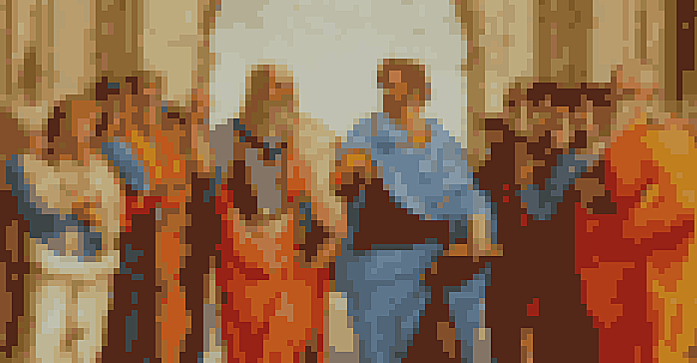

Platón es el padre de la filosofía

 Aprende
Explora
Recursos
Acerca de Nosotros
Iniciar Sesión
Aprende
Explora
Recursos
Acerca de Nosotros
Iniciar Sesión
Explora el fascinante mundo de la filosofía y descubre las profundidades del pensamiento humano. Sumérgete en las grandes preguntas de la existencia y expande tu mente a través de nuestros recursos accesibles.
Pero...¿Qué es la filosofía? Es más que un conjunto de ideas abstractas: es una forma de vida, una invitación a cuestionar, a explorar y a descubrir.
Amplía tu visión del mundo a través del diálogo y el debate en nuestro espacio dedicado a la filosofía..
Platón es el padre de la filosofía
Te invitamos a embarcarte en este apasionante viaje filosófico con nosotros. ¡Explora, aprende y desafía tus propias creencias! La filosofía está al alcance de todos, y juntos podemos descubrir nuevas perspectivas y enriquecer nuestra comprensión del mundo. ¡Bienvenido a la aventura filosófica!